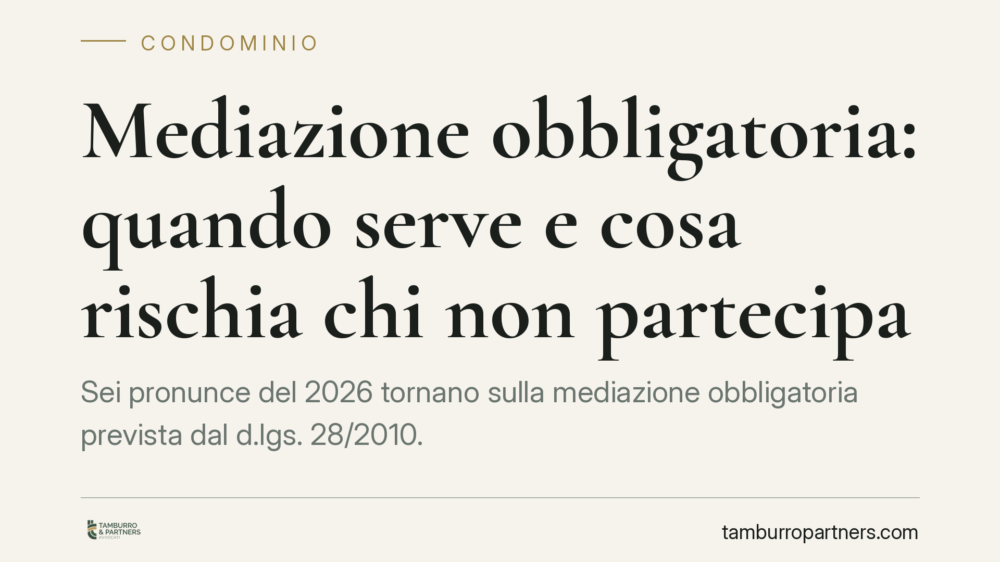

Mediazione obbligatoria: quando serve e cosa rischia chi non partecipa
Sei pronunce del 2026 tornano sulla mediazione obbligatoria prevista dal d.lgs. 28/2010. Il quadro che ne emerge è netto: in materia condominiale, successoria e di infiltrazioni il tentativo di conciliazione è condizione per poter stare in giudizio, serve la presenza effettiva delle parti al primo incontro e chi la trascura paga conseguenze processuali ed economiche concrete.

Il contesto
La mediazione è il procedimento in cui le parti, con l'aiuto di un terzo neutrale (il mediatore), cercano un accordo prima o al di fuori del processo. In alcune materie non è una scelta, ma un passaggio obbligato: senza aver tentato la mediazione il giudice non può decidere la causa.
Le sei pronunce del 2026 — tra cui interventi del Tribunale di Treviso e della Terza Sezione Civile della Cassazione — non introducono regole nuove, ma consolidano un orientamento ormai stabile su tre fronti: quando la mediazione è obbligatoria, come va svolto il primo incontro e cosa succede a chi non si presenta.
Inquadramento normativo
Il riferimento è l'art. 5 del d.lgs. 28/2010, che individua le materie in cui l'esperimento della mediazione è condizione di procedibilità della domanda giudiziale. Rientrano espressamente le controversie in materia di condominio e di successioni ereditarie, oltre a numerose altre fattispecie.
"Condizione di procedibilità" significa che la mediazione va tentata prima di avviare la causa. Se non lo si fa, il convenuto può eccepire il difetto entro la prima udienza, oppure il giudice lo rileva d'ufficio: in entrambi i casi il processo si sospende e viene assegnato un termine per attivare la mediazione. Mancato l'adempimento anche in quella seconda occasione, la domanda diventa improcedibile.
Sul primo incontro, la giurisprudenza richiamata ribadisce un punto decisivo: non basta che compaiano i difensori. La condizione di procedibilità si considera soddisfatta solo con la comparizione personale della parte (o di un procuratore munito di procura sostanziale ad hoc), perché la mediazione presuppone un confronto effettivo, non una presenza simbolica. Una partecipazione puramente formale equivale, secondo questo indirizzo, a mancata partecipazione.
Implicazioni pratiche
Per chi vive una lite condominiale — ripartizione spese, delibere impugnate, lastrico solare, infiltrazioni dall'appartamento sovrastante — o una controversia tra eredi sulla divisione, il messaggio è chiaro: il tentativo di mediazione non è un orpello aggirabile.
Le conseguenze della mancata o inadeguata partecipazione sono tre:
- Improcedibilità della domanda, con perdita di tempo e costi per rifare il percorso.
- Condanna al pagamento di una somma a favore dell'Erario, pari al contributo unificato dovuto per il giudizio, a carico di chi non partecipa senza giustificato motivo.
- Valutazione negativa nel merito: il giudice può trarre argomenti di prova dalla condotta della parte assente, elemento che può pesare sull'esito finale.
Nelle liti da infiltrazioni la questione è spesso duplice: va individuata la materia esatta (condominio, responsabilità, danni) per capire se e in che termini scatti l'obbligo. Un inquadramento sbagliato della domanda può far saltare l'adempimento anche in buona fede.
Per l'amministratore di condominio vale un'attenzione ulteriore: la partecipazione alla mediazione richiede, di regola, l'autorizzazione dell'assemblea, da organizzare per tempo per non trovarsi privi di legittimazione al primo incontro.
Cosa fare in concreto
- Verificate subito la materia. Prima di qualsiasi azione, accertate se la controversia rientra tra quelle a mediazione obbligatoria ex art. 5 d.lgs. 28/2010.
- Attivate la mediazione prima della causa. Presentate la domanda a un organismo accreditato e conservate la documentazione dell'avvio: è la prova dell'adempimento.
- Presentatevi di persona al primo incontro. Se non potete, rilasciate una procura sostanziale specifica a chi vi rappresenta; la sola presenza del legale non basta.
- Per il condominio, deliberate in anticipo. Portate in assemblea l'autorizzazione all'amministratore a partecipare e, se del caso, a transigere.
- Motivate ogni eventuale assenza. Se non potete partecipare, documentate il giustificato motivo: è l'unico modo per ridurre il rischio di sanzioni e valutazioni negative.
In sintesi
Le pronunce del 2026 confermano una linea rigorosa: la mediazione obbligatoria va svolta, va svolta sul serio e va documentata. Trattarla come una formalità da esaurire in cinque minuti è la strada più breve per vedersi dichiarare improcedibile la causa e subire una condanna economica.
---
*Contributo informativo a cura di Tamburro & Partners - Avv. Giuseppe Tamburro. Non costituisce parere legale.*
Ogni condominio ha una storia a sé.
Se gestisci un'amministrazione e vuoi un confronto su una specifica questione condominiale, scrivi allo studio. Ti rispondiamo entro un giorno lavorativo.